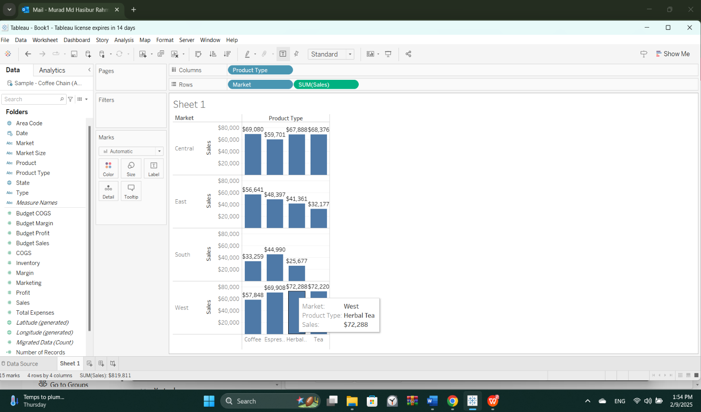
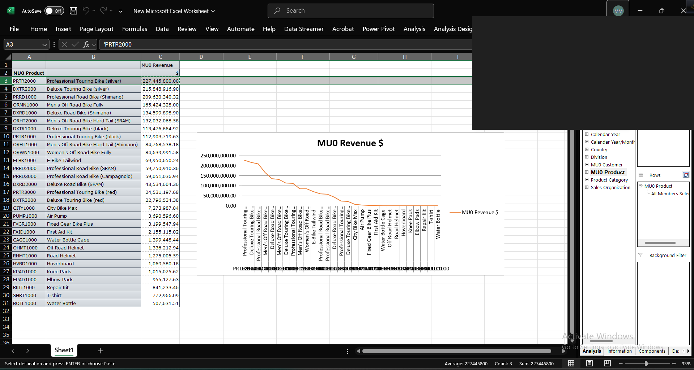
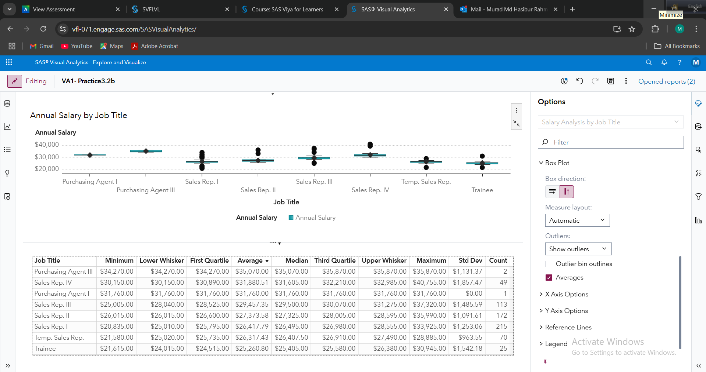
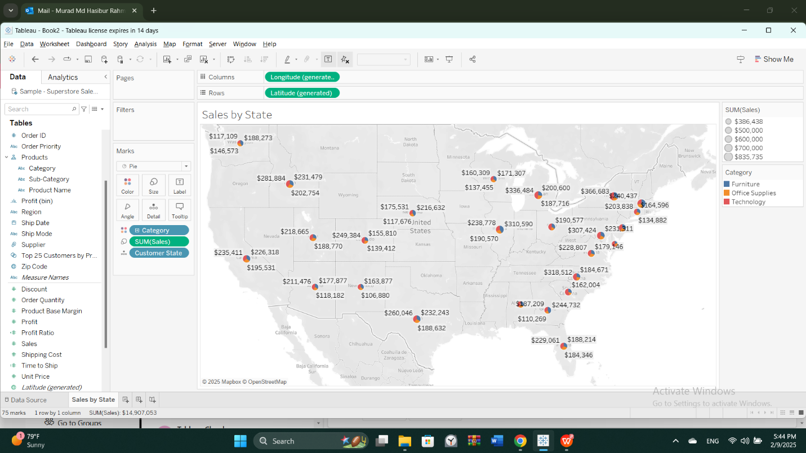

🗄️
SQL & Data Modeling
Coffee Chain Data Warehouse
A star-schema data warehouse in Access plus an analytical SQL library — joins, CTEs, ranking, running totals, and margin logic. Powers the dashboards.
I turn raw, messy data into decisions people can act on — from the data model and SQL all the way to a dashboard that answers the question.
I'm an aspiring Business Intelligence and Data Analyst who loves turning messy data into clear, confident answers.
Through graduate studies at Lamar University I've worked across the full BI stack — modeling data warehouses, writing SQL, and building dashboards in Tableau, SAS, and SAP BW — and I'm ready to bring that end-to-end skill set to an entry-level analytics role.
A practical, end-to-end toolkit — from modeling and querying data to visualizing it and reporting it at enterprise scale.
Modeling data for analysis and querying it to answer business questions.
Turning analysis into dashboards that tell a clear, honest story.
Reporting at scale with enterprise data-warehouse tooling.
Real queries from my Coffee Chain analysis — click a business question to see the SQL that answers it.
Analyses I built, rebuilt here as fully interactive charts — filter, toggle, hover, and drill into the underlying data. Each opens on its own page.

Grouped bars with a market filter, product-type toggles, and hover tooltips. Totals reconcile to $819,811.
Open dashboard →
Ranked bar chart of 29 products by revenue ($1.79B total), with Top 10 / 20 / All views and share-of-total on hover.
Open dashboard →
Compensation across 8 roles (647 employees) with an Average / Headcount toggle and full box-plot stats on hover.
Open dashboard →
Interactive US tile-grid map shaded by sales, with a Sales / Orders toggle and exact figures on hover. Computed from source data ($2.3M).
Open dashboard →Each project frames a business question — problem, data, method, and result. Full deliverables live in the repository.
A star-schema data warehouse in Access plus an analytical SQL library — joins, CTEs, ranking, running totals, and margin logic. Powers the dashboards.
Interactive maps and cross-tab charts answering where and what the business should sell more of, by state, region, and product type.
Revenue reporting at scale on Global Bike Inc. — InfoObjects, Key Figures, exception aggregation, and DataSource design.
Box-plot distributions of pay, category-vs-measure classification, and cross-country profitability analysis.
Identifying underperforming product lines, loss-making products, and top cities by orders and profit.
Why a manager can't decide from a transaction report — and how an analytical (OLAP) view fixes it.
Currently in my final year, with a hands-on Business Intelligence focus (MISY 5360) spanning the full analytics pipeline — from the conceptual foundations of analytical data through enterprise reporting.
Extended my coursework into a public, reproducible portfolio — writing analytical SQL, building four interactive dashboards from scratch, and shipping this site.
I'm open to entry-level Business Intelligence and Data Analyst opportunities. If you're hiring — or just want to talk data — I'd love to hear from you.